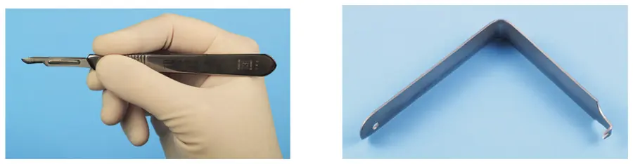
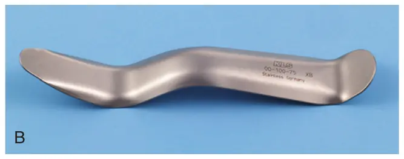

نسخه استخراجشده؛ ترجمه یا تأیید علمی انجام نشده است. وضعیت: captured
میخواهی برای کشیدن جراحی مولر سوم پایین یک فلپ تمامضخامت بزنی. روی تری چهار تیغه هست: ۱۰، ۱۱، ۱۲، ۱۵. کدام را برمیداری؟

شمارهی ۱۵. پرکاربردترین تیغهی جراحی داخل دهان است: کوچک، برای برش دور دندان و درون بافت نرم. سه تای دیگر هرکدام یک کار مشخص دارند:
سوار و پیاده کردن تیغه فقط با نیدل هولدر. لبهی غیربرنده را میگیری، دسته را طوری نگه میداری که بخش نر رو به بالا باشد، و تیغه را در شیار میلغزانی تا صدای کلیک بدهد. برای برداشتن، انتهای دورتر از لبه را میگیری، بلند میکنی و همیشه خلاف جهت بدن خودت و اطرافیان بیرون میکشی — بعد مستقیم داخل شارپسباکس.
سه قاعدهی برش: دسته را مثل قلم بگیر، بافت متحرک را تحت کشش نگه دار وگرنه تیغه بهجای بریدن، مخاط را هُل میدهد، برای فلپ تمامضخامت آنقدر فشار بده که مخاط و پریوست با یک ضربه با هم بریده شوند.
تیغه یکبارمصرف است و زود کند میشود — با تماس با استخوان و دندان، و حتی با چند ضربهی پیاپی در بافت کراتینیزه. اگر چند برش تا استخوان لازم داری، ممکن است در همان یک عمل به تیغهی دوم نیاز پیدا کنی.
صفحهی بین پریوست و استخوان تقریباً بدون خونریزی و کاملاً مشخص است — تمام کار در همین لایه انجام میشود. ابزارش الواتور پریوستئال Molt شمارهی ۹ است: یک سر نوکتیز، یک سر پهن و گرد.

در فلپهای کوچک، خود Molt شمارهی ۹ هم رترکتور میشود: پس از بلند شدن پریوست، تیغهی پهنش را محکم روی استخوان نگه میداری و فلپ کنار میماند.
رترکتور، میدان دید میسازد و بافت را از تیغه محافظت میکند. دو تای پرکاربرد گونه: Austin (زاویهی قائم) و Minnesota (پهن و آفست). هر دو همزمان گونه و فلپ را کنار میزنند: پیش از برش شل داخل گونه، و بعد از رفلکشن لبهاش روی استخوان مینشیند.
Henahan و Seldin شبیه الواتور پریوستئالاند ولی لبهشان تیز نیست — رترکتورند، نه بلندکنندهی پریوست. برای زبان، در کشیدن معمولی همان آینه کار میکند؛
رترکتور Weider پهن و قلبیشکل با یک سطح مضرس است تا زبان را محکم بگیرد و به داخل و جلو بکشد — نه آنقدر عقب که تهوع بدهد یا زبان را به اوروفارنکس هُل کند. برای بیوپسی خلف زبان، مطمئنترین راه کنترل، گرفتن قدام زبان با تاول کلیپ است — به شرط بیحسی عمیق در محل کلیپ و گفتن از قبل به بیمار.
گرفتن بافت نرم: Adson ظریف (با یا بدون دندانه) برای نگه داشتن ملایم؛ دندانهدار با فشار کمتر بافت را مطمئنتر نگه میدارد. برای عقب دهان Stillies (۷ تا ۹ اینچ). پنس کالج برای برداشتن قطعهی دندان، آمالگام و گاز. برای برداشتن حجم بافت یا بیوپسی (مثل اپولیس فیشوراتوم) Allis با قفل و دندانه.
Allis هرگز روی بافتی که قرار است در دهان بماند — لهشدگی زیادی ایجاد میکند. فقط روی بافتی که برداشته میشود، یا برای گرفتن زبان مثل تاول کلیپ.
نوع سؤال: ساخت کلمه · 4 خانه
حروف منبع: ا · ف · ل · خ